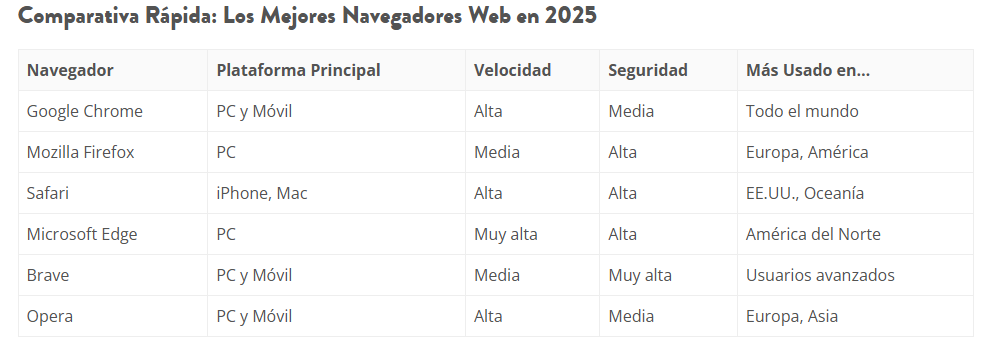

Uno de los componentes más habituales en el cliente es el navegador web (browser) , que permite acceder y visualizar el contenido ofrecido por los servidores de Internet sin la necesidad de que el usuario instale un nuevo programa. Desde la creación de la Web hasta hoy, los navegadores han tenido una gran evolución, estando preparados para soportar cualquier tipo de interacción y funcionalidad requerida por el usuario. Algunos de los exploradores más relevantes son:
- Google Chrome.
- Internet Explorer y Microsoft Edge .
- Mozilla Firefox..
- Safari.
- Opera

Más información: https://www.topseowebs.com/navegadores-web-mas-usados-de-internet-mejores-rapidos-y-seguros/
¿Qué características van a ser clave para diferenciar entre unos navegadores y otros?
- Plataforma de ejecución: se refiere al sistema operativo y entornos donde puede funcionar el navegador.
- Google Chrome: Funciona en Windows, macOS, Linux, Android, iOS y ChromeOS.
-
Firefox: Multiplataforma (Windows, macOS, Linux, Android, iOS).
-
Edge (Chromium): Windows, macOS, Linux, Android, iOS.
-
Safari: Exclusivo de dispositivos Apple (macOS, iOS, iPadOS).
-
Opera: Multiplataforma (Windows, macOS, Linux, Android).
- Características del navegador: son las funciones integradas que ofrece cada navegador al usuario y al desarrollador.
-
Chrome: DevTools avanzados, sincronización con cuenta Google, traductor integrado.
-
Firefox: Herramientas para desarrolladores potentes, modo estricto de privacidad.
-
Edge: Integración con Windows y Microsoft 365, herramientas para PDF, colecciones.
-
Safari: Integración con el ecosistema Apple, buen rendimiento energético.
-
Opera: VPN integrada, bloqueador de anuncios, modo ahorro de datos.
-
- Personalización de la interfaz: grado en que se puede adaptar el navegador visualmente o funcionalmente.
-
Chrome: Temas, extensiones, organización de pestañas.
-
Firefox: Muy personalizable, temas profundos, controles UI ajustables.
-
Edge: Compatible con temas, extensiones de Chrome, interfaz adaptable.
-
Safari: Personalización limitada, pero permite ajustes mínimos y extensiones.
-
Opera: Muy visual, con accesos rápidos personalizables y sidebar útil.
-
- Soporte de tecnologías web: nivel de compatibilidad con los estándares web modernos: HTML5, CSS3, ES6, WebAssembly, etc.
-
Chrome y Edge (Chromium): Altísimo soporte y adopción rápida de nuevas APIs.
-
Firefox: Excelente soporte y participación activa en los estándares.
-
Safari: Buen soporte general, aunque suele implementar nuevas tecnologías más lentamente.
-
Opera: Hereda el soporte de Chrome, ya que usa Chromium.
-
- Licencia de software: tipo de licencia bajo la cual se distribuye el navegador.
-
Chrome: Gratuito, código cerrado (con base en Chromium de código abierto).
-
Firefox: Código abierto bajo la licencia MPL (Mozilla Public License).
-
Edge: Código cerrado, basado en Chromium (que es de código abierto).
-
Safari: Código cerrado, pero incluye partes de WebKit (que es open source).
-
Opera: Gratuito, mayoritariamente código cerrado.
-
- Seguridad: capacidad del navegador para proteger al usuario frente a amenazas (malware, phishing, scripts maliciosos).
-
-
Chrome: Actualizaciones frecuentes, sandboxing, protección de navegación segura.
-
Firefox: Protección contra rastreo, bloqueo de scripts peligrosos, código auditado.
-
Edge: Integración con Microsoft Defender, modo supervisado para niños.
-
Safari: Buenas prácticas de privacidad, Intelligent Tracking Prevention.
-
Opera: VPN integrada, bloqueador de anuncios.
💡 Todos los navegadores modernos aplican parches de seguridad rápidamente.
-
- Versatilidad en dispositivos: disponibilidad y buen funcionamiento en diferentes tipos de dispositivos (PC, móvil, tablet, smart TV, etc.)
-
Chrome: Excelente versatilidad, rendimiento optimizado en casi todos los dispositivos.
-
Firefox: Buena versión móvil, pero menos adoptada en móviles.
-
Edge: Fluido en PC y móvil (Android/iOS).
-
Safari: Optimizado exclusivamente para dispositivos Apple, excelente en iPhone/iPad.
-
Opera: Opera Mini y Opera Touch están diseñados para un uso móvil eficiente. 💡 Para desarrolladores web, probar en distintos dispositivos y navegadores es esencial para asegurar compatibilidad y experiencia de usuario.
-